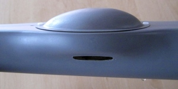
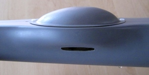

Antenna Design Overview¶
This article provides an overview of the fundamental principles of antenna design. Antenna design is an important factor in using UAVs over extended range and where there are obstructed views. While this is not directly related to Antenna Tracking/autopilots, it may be useful for some readers.


Antenna fundamentals¶
When we speak of antenna radiation it also includes the reverse, that is, the antenna ‘collecting’ radiated energy.
Any piece of wire will radiate energy when connected to a source of RF ( Your transmitter or receiver). How WELL it radiates that applied energy is dependent on only two factors:
That the antenna is resonant at the same frequency as the radio signal applied and
That the feedpoint of the antenna is matched to the impedance of the attached transmitter energy source.
Tip
- Maximum energy transfer between source and load ( the antenna)
occurs ONLY when the load and source impedance’s are equal.

How well the antenna radiates that energy in any or all directions, if the above conditions are met, is then only dependent on the antenna design, shape, or style. For example:
A simple vertical 1/4 wave radiator will radiate a doughnut shaped pattern, in all direction of the compass, with low energy upwards and downwards, in the direction of the antenna element.
A yagi type antenna, on the other hand, ( such as your VHF or UHF TV antenna) focuses the energy in a single direction, as would a torch.
Antennas do not have gain:
They focus the energy to a greater or lesser extent, in a direction of design, but do this by robbing energy from other radiating directions.
Your torch puts more light out the lens end, with nothing out the rear end.
If you remove the reflector from behind the torch bulb, the light is radiated in all directions, omnidirectionally, but is much weaker at any distant point than the focused beam.
{kind=link}
Antenna radiation is polarized¶
That is to say, the radiated electromagnetic wave has a net polarization plane. This is usually either linear or circular (elliptical polarization is also found, but that is simply a mix of the two other types)
A 1/4 wave vertical antenna will radiate linearly, with vertical polarization. Placed on its side it will radiate horizontal polarization.
A Helical antenna (looks like a coil of wire wound in a screw fashion) wound clockwise when viewed from behind will radiate clockwise circular polarization, and vise versa.
For reception of maximum energy, the transmitting and receiving antennae must be identically polarized.
There is a massive loss of signal ( easily some 30dB, although the theoretical loss is infinite) if one attempts to receive a horizontally polarized signal with a vertically polarized antenna.
Similarly, there are massive losses if trying to receive a circularly polarized signal with an antenna of the opposite circular sense.
The odd man out is that there is only a 3db loss between an antenna that is circularly polarized and one that is linear.
You would use circular polarization if:
If the two antennas in question could not be made to maintain similar attitudes, such as one in a pitching , rolling aircraft, then there would be unacceptable signal losses as the aircraft banks and pitches.
So you could use a vertical on the aircraft, and a helical or turnstile, or similar, on the ground segment.
This way you would only ever experience a 3db maximum loss. ( all assuming good line of sight view).
Or you could gain back the 3db loss by fitting a similar circularly polarized antenna on the aircraft, giving the best of both worlds.
But you actually gain more than that with circular polarization at both ends.
Assume first that the two antennas are simple vertical monopoles, radiating vertically polarized signals.
When you are flying, at the flying club, etc, you are probably near some metal structures, the ‘hanger’ , cars and other vehicles, etc.
All these structures reflect the same energy you are trying to receive.
In addition, when the aircraft is low and far, the RF transmitted by the A/C antenna follows two paths to your receiver - One directly, and one via a reflection from the ground, somewhat midway between you and the A/C.
What happens to the reflected wave is that the polarization is changed in unpredictable ways.
Your receiver ( and antenna) does not know or care where the received energy comes from, so it receives this reflected energy as well.
These multitude of received waves add constructively and destructively with the main received wave, causing large, short duration, signal drop-outs - a sort of ‘flutter’ in the signal.
If both antenna are circularly polarized, however, the picture is quite different:
When the circular polarized waveform is reflected , it REVERSES its polarization.
When this reversed polarized signal arrives at your receiving antenna it is largely rejected and hugely attenuated, so interfering minimally with the main received signal.
 

{kind=link}
Resonance and matching issues¶
Most simple linear antenna are either of the monopole or dipole form.
A single monopole ( 1/4 wave vertical for example) or a single dipole will only radiate linear polarization.
Any antenna is only resonant when it is exactly the correct length AT the frequency of operation.
( this does not apply to the class of broadband antenna, such as helical antenna, etc.
The helical will easily cover an ocatve with good performance).
At resonance the antenna will exhibit its characteristic feedpoint impedance.
Feedpoint impedance is expressed with two terms, the pure resistive part, and the reactive ( j operator) part.
Most transmitters and receivers terminal impedance are made to be 50ohms resistive, or very close to that.
So it stands to reason the antenna must also be 50 Ohm resistive to have max energy transfer.
However, none of the antenna are that obliging, so we have to do some feedpoint matching to meet the criteria.
A 1/4wave vertical monopole over a ground plane has a resistive feed point of around 75ohms.
A half wave dipole is around 72ohms.
As with resistors, placing two dipole in parallel as in the IBcrazy turnstile, will result in a feedpoint impedance of 35ohms.
A 75ohm feed connected to a 50ohm coax and transmitter will exhibit a 1.5:1 SWR ( the ratio of power going out to power reflected).
A 1.5:1 SWR means that approx 3% of your transmitter power is not being radiated: ( 30milliwatts for a 1watt transmitter).
That is not so bad, and we can live with an SWR of 1.5:1 in most cases.
The turnstile antenna is a pair of crossed dipoles, fed 90deg out of phase with each other, thereby generating circular polarisation.
You CANNOT simply connect the dipole in parallel at the coax feedpoint though.
Apart from the halving of impedance ( which we decided we can live with) the radiation pattern and polarization of the antenna will be totally destroyed by unwanted radiation from the coax cable.
The RF energy, at the dipole connection point, ‘leaks’ out and currents then flow down the outer shield of the coax.
As mentioned previously, any piece of wire will radiate RF energy, and so the coax radiates this energy, and the radiation again adds constructively and destructively with the main antenna radiation, causes complete distortion and signal nulls in the pattern.
This radiation from the coax MUST be prevented.
This is done by means of a Balun transformer. - which is is an acronym for ‘Balanced to Unbalanced transformer’.
A dipole is a balanced device - it is electrical equal along each element, outwards from the feedpoint. It therefore requires that the feedpoint be fed in a balanced fashion.
Coax cable is a balanced feeder - the shield is at ground potential, while the inner core carries the energy.
This effectively ( oversimplifying a little) connects the one dipole half to the ‘live’ core, and the other half to ‘ground’ unbalancing the dipole.
This causes currents to flow on the coax outer shield, and distortion of the dipole radiation pattern.
Baluns can be constructed from coax cable, but the accuracy required in coax cable length ( they are normally length multiples of 1/4 wavelength) is very critical, especially in the GHz range - 0.5mm can have a great effect.
The turnstile is not new - it is some 50 to 60 years old, and is well researched and published.
For the higher microwave frequencies, a plumbing type version is more appropriate.
The balun and feed match consists of an outer and an inner tube.
The ratio of diameters D/d is chosen to give the desired impedance:
D/d = 1.86 for 75ohms, and 1.5 for 50 ohms.
Typically the outer tube would be around 8mm for use at 2.4GHz.
In order to obtain circular polarisation, I mentioned that the two dipole have to be fed 90deg apart ( phase quadrature).
This can be done as in the coax balun version above ( inserting an extra 1/4wave length of coax in the leg to one dipole gives an extra electrical wavelegnth of 90 degerees).
Or, this can be achieved by slightly lengthening the one element ( becomes more inductive) and shortening the other( becomes more capacitive) - this also introduces the required phase difference between the elements.
This can be seen in the images above:
The one element is typically around 0.21 wavelength per half, while the other is around 0.25 wavelength.
One short and one long element penetrate the outer tube and are connected to the inner tube.
While the opposite pair of elements are connected only to the outer tube.
The outer tube is split or slotted ( 0.5mm width slot). The slot is approx 0.23 wavelength long.
The relationship in length between the two dipoles is critical.
Typically this would be measured on a network analyser and the feed impedance of each element set to say R+j45 ohms ( longer dipole) and the other to R-j45 ohms.
This will give the correct phase relationship between elements.
A half mm variation can have a great effect, turning a good antenna into a mediocre one..
The last image above shows a teflon tube.
This is inserted in the tube from below, and fits snugly inside the outer tube, and over the inner tube.
This is then slid up and down to adjust the ‘R’ part of R+-jX, till the match is a good 50ohms.
This does not affect the antenna radiation pattern or characteristics.
Obtaining a 50ohm impedance match can be done by trimming the element lengths as well, at the same time destroying the antenna radiation pattern and circularity.
And that is why it is not so simple to do at home, and why the ‘Hobby King’ et al variants sold everywhere are mostly trash.
You will probably achieve a few km range with those.
Remember, any old piece of wire will radiate.
I easily achieve 15km with 500milliwats at 2.4GHz using two split sheath balun , properly matched and trimmed, crossed dipoles..
For those interested:
References are - RSGB VHF/UHF Manual - page 8.45
Modern Antenna Design - Page 255
Here are some images of my split sheath balun crossed dipoles.
Split-Sheath Balun Crossed Dipoles¶
{kind=link}
{kind=link}
{kind=link}
{kind=link}
{kind=link}
{kind=link}
{kind=link}
Understanding dB, Watts and dBm¶
The Watt (W) is the standard SI unit for measuring power.
The decibel (dB) is a
logarithmic ratio that can be used to describe the non-linear
differences between signal power values across a range (a positive or
negative difference means a gain or a loss of the signal). For example,
you can use a negative dB value to describe the non-linear rate of
signal loss as as it travels through a conductive medium. The dB
unit is based on log 10 (the “Log” function on a scientific calculator). dBm is an abbreviation for the
power ratio in decibels (dB) of the measured power referenced to one
milliwatt (mW). To put it another way, the dBm value is the number of dB
by which a value exceeds 1mW: 0dBm is 1mW, 1dBm is 1.259mW etc).
The basic conversion equations are below:
Watt to dBm:
10*log10([signal in watt]*1000)
dBm to Watt:
(10^([ratio in dBm]/10))/1000
Power calculations expressed in dB or dBm can use simple addition and subtraction. For example, consider a radio with an output of 60mW which is connected to an antenna with a gain of 14dBi using a 7m cable (attenuation 25dB per 100m). We can calculate the output power as shown:
TX_Power= 60mW = 0.06W = 17.78dBm (using conversions above)
Cable_Loss = 25dB/100m = 0.25dB per meter * 7 metres = 1.75dB
Antenna_Gain = 14dBi
Output_Power = TX_Power - Cable_Loss + Antenna_Gain
Output_Power = 17.78 - 1.75 + 14 = 30.03dB = 1W (using conversions above)
Acknowledgements¶
Much of this antenna information has been provided by Joe Noci as an extension of this discussion: 433 UHF LRS Antenna “Turn Stile”.